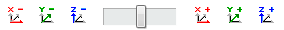

Analysis
|
Start via the → → menu or via the → shortcut menu of the job and job list. If you start the analysis from the shortcut menu using the Test tool position function, both the Frame and the Tool are taken directly from the job. |
|
|
|
Click the icon to start the Analysis. Further additional functions are available via their corresponding icons. Click the respective icon and hold down the mouse button. |
Analyze one/two surfaces
|
|
Display the model in transparent mode. |
||
|
Frame: First, select the frame that you want to use for the analysis. In the graphics window, now click the surface(s) that you want to analyze. The hyperMILL plane analysis starts automatically. The dialog box contains different information, depending on the surface type. You can analyze the following surface types: plane, fillet, torus, cone, free-form surface and hole. Take analysis results You can save the graphical feedback of the dimensions on a freely specifiable layer. |
||
|
|
Click the icon to define the layer and enter the name to which the feedback should be saved. Then determine the layer color by clicking the colored surface. |

Radius analysis/plane analysis
You use radius analysis to analyze the radii of all or individual surfaces of a CAD model. You use plane analysis to analyze a CAD model in terms of its planes.
|
|
Display the model in transparent mode |
||
|
Show planes |
|||
 |
Radius/surface information Select the surfaces that you want to use for the analysis. |
||
|
Select the frame that you want to use for the analysis. |
The radius analysis/plane analysis starts automatically. All radii/planes found are combined into groups in a list display.
Use Max. / Min. radius to specify the maximum or minimum size of the radii to be recognized. You use Max./Min. angle to specify the maximum or minimum angle of the planes to be recognized. You use the step value to specify the increments for the size of the respective group.
If you subsequently change one of these parameters and press RETURN, hyperMILL automatically performs a new calculation that takes account of the modified parameters.
Filter
You use the Show concave/convex/undercut radii options to specify which radii are recognized. In the CAD model, each radius group/plane group is assigned a color (see List display, column C) and each group can be individually shown or hidden. To hide a radius group, deselect the check box in column V.
To show or hide all groups, right-click in the list display and select All on/All off. To show or hide all selected groups, right-click in the list display and select All selected on/All selected off.
If you select the relevant line for a radius group or plane group in the list display, all of the radii or planes in this group are colored red in the CAD model.
Write planes / radii on separate layers
You can use this function in the results list shortcut menu to save the radii / planes from the analysis on separate layers. If you double-click an entry in the list display, the radii/surfaces combined and shown in this group are zoomed in (individually) in the graphics window and combined into a special list (Zoom element).
You can select the elements in this list individually or you can use the arrow keys to navigate through the list. You can change the color for each radius group or Surface Group in the list display by double-clicking the relevant color symbol in column C.
|
|
The model appears transparent. In each case, the first transparent color set in the CAD program is used. |
|
|
|
The model is displayed in the default color for the tool display (also see hyperMill → → → ). The recognized radii are displayed in the colors for the list display (see also hyperMILL → → → ). |
|
|
The model is displayed in the default color for the tool display (also see hyperMill → → → ). |
The recognized planes are displayed in the colors for list display (see also hyperMILL → → → ).
For the radius analysis and plane analysis, you can save the graphical feedback concerning the displayed parameters in a layer of your choice. For information on this procedure, see Analysing one/two surfaces.
Test tool position
You can use the Test tool position function to determine the best frame for a particular type of machining.
Setup
Click the Tool / Frame line to specify the frame and tool.
Machine: Specify the machine model to be used for the analysis.
Show machine: Enable this function to display the machine model in the graphics window.
Configuration
Setup point mode: Use Automatic center to place the CAD model automatically at the center of the machine table. Select Manual to specify the setup point for the model.
 |
To do this, click the Setup point line and select the required point directly in the graphics window (icon 1) or enter the coordinate values. |
 |
Click icon 2 to open the Point attribute dialog in order to change the orientation and define an allowance. |
If you enable the collision check option and define a milling area, the tool is displayed in red if it is in collision.
Tool orientation: You can align the tool at the frame that is currently set or at the surface normal. Use the left mouse button to position the tool anywhere in the CAD model.
Tool inclination by mouse: You can use the graphical preview of the three axes (A, B and C) to specify (directly at the tool) the tool inclination for each axis separately. To do this, click the relevant preview and use the mouse to move the tool. Then click again when the tool is positioned correctly.
Display of position (frame): Displays the current angles for the B and C axes as well as the coordinates of the tool’s contact point ( X, Y, Z), based on the frame set under Tool and frame. You can either enter the exact positioning directly in the corresponding line or control the entry using icons.
Change tool position based on the displayed coordinate system.
 Change tool position based on the currently set frame.
The accuracy is set using the increment value.
|
Optimize tool length: hyperMILL calculates the optimum tool length for any tool position. |
|
|
|
Transparent: The model appears transparent. In each case, the first transparent color set in the CAD program is used. |
|
|
Frame: hyperMILL saves the current tool position as a frame. If you use a machine that supports serration, (see Job list), the frame created is automatically always compatible with the respective serration. |
Results tool length optimization
The Required tool length (including the Tool extension) as well as the calculated Holder clearance are displayed directly in the dialog.
New tool length: Specify how you want to use the tool length optimization results here. The following options are available:
Change tool length: The tool used in the job is adjusted accordingly. Please also take into account the effect on other jobs that use the same tool.
Create new tool: A new tool with a new ID is created using the data of the current tool, taking into account the optimization results.
Better tool from database
|
|
Searches for a more suitable tool in the database. Change the corresponding parameters in the Tool diameter section and click the icon to perform the tool search with the changed parameters. You can specify a tolerance range both for the Tool diameter and for the Corner radius that is taken into account during the search. |
Result
|
|
The changed/new tool is displayed in the dialog under Results. Click the icon to copy the tool to the job. The tool is also saved in the OPEN MIND tool database. |
|
|
Click the icon to discard the changed/new tool. |